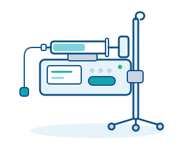

Therapy · Device 18 of 28
Infusion pump / syringe pump
Precise delivery of drugs and fluids
Infusion pumps deliver fluids and medication into the body at a controlled, adjustable rate, usually via a venous access. Syringe pumps are designed for small volumes and highly potent drugs.

How it works
Volumetric infusion pumps deliver fluid from a bag or bottle through a dedicated infusion set that is loaded into the pump. A peristaltic mechanism compresses the tubing section by section, pushing the fluid forward at a defined rate. Syringe pumps, by contrast, use a motor drive to advance the plunger of a mounted syringe with high precision.
The flow rate is set in millilitres per hour; many devices convert doses directly based on body weight or drug concentration. Drug libraries with stored limits (dose error reduction systems) warn users about implausible entries.
Sensors detect air in the line, blockages (occlusion) and empty containers and trigger alarms. The pumps have batteries for transport, and several devices can be combined in mounting systems on an IV pole or in docking stations.
Areas of use
- Intensive care and intermediate care units
- Anaesthesia (total intravenous anaesthesia)
- Oncology (chemotherapy)
- General wards
- Pain therapy (PCA) and neonatology
At a glance
- Risk class (MDR)
- IIb
- Typical settings
- Intensive care unit, operating theatre, general ward, oncology
- Space requirement
- Compact; mounted on an IV pole or in a docking station
- Typical service life
- Around 8 to 10 years
What to look for when procuring
- Decide between volumetric pumps and syringe pumps depending on the application; intensive care units usually need both types.
- Check consumable compatibility: many pumps require proprietary infusion sets, which determines the running costs for years.
- Look for a centrally maintained drug library and a uniform user interface throughout the facility to avoid operating errors.
- Clarify interfaces (for example with the PDMS or alarm forwarding) and whether docking stations with a shared power supply make sense.
- Plan for the instruction of all users under the German Medical Devices Operator Ordinance (MPBetreibV), periodic safety inspections (STK) and battery replacement as part of the service contract.
Key terms
- Occlusion
- A blockage of the infusion line, for example due to a kinked tube; the pump detects the rise in pressure and raises an alarm.
- Bolus
- A larger dose administered within a short time.
- PCA
- Patient-controlled analgesia: patients trigger doses of pain medication themselves within predefined limits.
Planning to acquire a device like this?
We give independent, vendor-neutral advice, compare quotations and support you through the procurement process.
Request a consultation